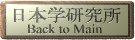

Lieblink(g)s unserer Schule
|
| http://www.aikidojournal.de |
Die Seite von Horst Schwiekerath (Aikdo Journal) |
| http://www.kodokan.org |
KODOKAN Judo Institut Tokyo |
| http://www.tenshukaku.de |
TENSHUKAKU von Ulf Lehmann ( Geduld, aber es lohnt) |
| http://www.bushido-amorbach.de/index.php |
Traditionelles Aikido des Shin Dojo |
| http://www.japan-link.de |
mit LINK zum Aikiweb |
| http://sumo.goo.ne.jp/eng/kimarite/index.html |
Ein bisschen was über Sumo |
| http://www.aikikai.or.jp |
Hombu Dojo (was sonst?) |
| http://www.japan-link.de |
Die interkulturelle Verbindung zwischen Japan und Europa |
| http://aikido-ufafabrik.de/woerter/woerter.php |
Aikido Wörterbuch |
| http://web-japan.org/kidsweb/explore/german/index.html |
Japan erforschen |
| Reihe wird gelegentlich fortgesetzt, erstmal viel Vergnügen |
|  |